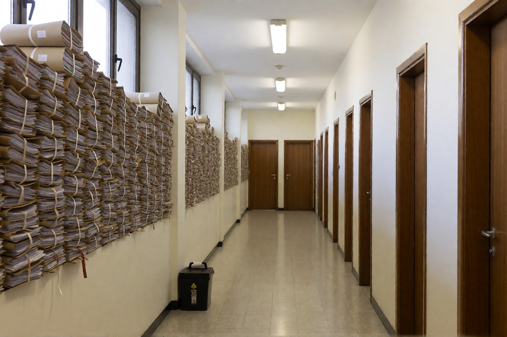

Sicilia · 19 novembre 2026
Topi al palazzo di giustizia di Palermo, alcune udienze sospese

Due roditori trovati morti nelle trappole, cancellieri che si rifiutano di entrare in aula e udienze rinviate. Il presidente del tribunale assicura che non ci sarà nessuno stop: la causa sarebbero i ritardi nella raccolta dell'umido al Capo.
di Franco Zanghì
Ci sono i topi al palazzo di giustizia di Palermo. Giovedì 19 novembre, in mattinata, 2 roditori sono stati trovati morti nelle trappole, e alcune udienze sono state sospese.
Come scrive l'ANSA, le trappole erano state sistemate nel fine settimana precedente, dopo un intervento di derattizzazione. Alcuni cancellieri si sarebbero rifiutati di andare in udienza, e per questo una parte dell'attività giudiziaria è slittata.
La risposta del tribunale
Il presidente del tribunale, Piergiorgio Morosini, ha però rassicurato: non ci sarà nessuno stop delle udienze, e tutti i provvedimenti per risolvere il problema sono già stati presi tempestivamente.
Siamo nel palazzo di giustizia di piazza Vittorio Emanuele Orlando, a due passi dal mercato del Capo. Ed è proprio da lì che arriverebbe il problema: ad attirare i roditori sarebbero i ritardi nella raccolta dell'umido nel quartiere e nel mercato. Un richiamo forte, per un edificio pieno di carta. Gli uffici giudiziari hanno già segnalato la situazione al Comune.
Non è la prima volta
Il palazzo di giustizia di Palermo non è nuovo a disagi di questo tipo. Nell'estate del 2026 il problema era stato il gran caldo, con i condizionatori insufficienti a rendere le aule utilizzabili nelle ore centrali della giornata.
Le cronache locali — LiveSicilia, PalermoToday, BlogSicilia, MeridioNews — hanno raccontato la giornata come una protesta del personale amministrativo più che come un blocco: udienze in ritardo, aule svuotate per qualche ora, qualche rinvio.
La conseguenza pratica, però, c'è: senza il cancelliere l'udienza non si può tenere, perché è lui che redige il verbale e tiene il fascicolo. È il motivo per cui una protesta di quel personale si traduce in rinvii, anche quando i giudici e gli avvocati sono in aula. E in un tribunale grande come quello di Palermo un rinvio, nei processi civili, può valere mesi.
Il punto
Due topi morti nelle trappole, alcune udienze sospese e cancellieri in protesta. Il tribunale assicura che la macchina non si ferma e indica la causa fuori dalle sue mura, nei rifiuti del Capo. Il problema, raccontato così, non è un'emergenza sanitaria: è il segnale di un edificio pubblico che dipende da un servizio comunale che non funziona.
Fonti
- ANSA, «Topi al palazzo di giustizia di Palermo, protestano alcuni cancellieri», 19 novembre 2026
- LiveSicilia, «Palermo, topi al palazzo di giustizia: ratti morti, cancellieri in rivolta», 19 novembre 2026
- PalermoToday, «Topi al palazzo di giustizia, sospese alcune udienze», 19 novembre 2026
- BlogSicilia, «Topi al palazzo di Giustizia di Palermo, protesta dei cancellieri e udienze in ritardo», 19 novembre 2026
- MeridioNews, «Palermo: topi al palazzo di giustizia, sospese alcune udienze», 19 novembre 2026